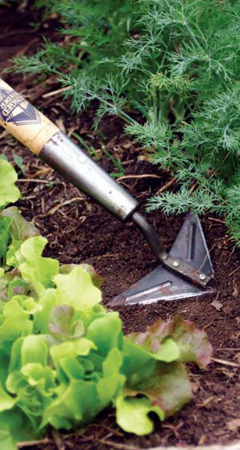

Use these seven organic techniques to keep weeds in their place.
At first, weeds seem innocuous enough - just green confetti scattered among flowers and vegetables. In fact, weeds bestow a multitude of gifts on us - from holding and protecting bare soils and providing habitat for beneficial insects, to their use as edible and medicinal plants (see “Get to Know Your Weeds”). But weeds compete with garden crops for space, water and nutrients, and if not kept in check, they can seriously affect crop yield and quality.
The key to preventing weeds from becoming a problem is to remove them before they produce seeds. Every pigweed or galinsoga plant that sets seed in your garden opens the door to the arrival of thousands of its offspring. These seeds can remain dormant for years and then sprout when you hoe or till your garden and bring them to the surface. Although some people use chemical herbicides to kill weeds, research suggests that these chemicals pose health risks to us and are damaging to our environment. Furthermore, they’re simply not the most effective way to control garden weeds. Herbicides, after all, are designed to kill plants. Fortunately, though, there are plenty of easy and safe organic techniques to keep weeds in check.
Mulch. Using weed-free mulches is one of the best methods to prevent weed problems. Good options include mulching with leaves, straw or grass clippings. Fresh grass clippings from lawns that haven’t been treated with herbicides are a great choice because you can get them free from your lawn and from neighbors. Grass clippings contain about 4 percent nitrogen and provide a slow-release fertilizer as they decompose. Straw is the leftover material after grain has been threshed, and it makes a good mulch because it contains few weed seeds. Hay (dried grasses) can work well, too, but talk to a reputable supplier and specify you intend to use it as mulch to be sure it isn’t full of grass seeds. A method of gardening championed by the late Ruth Stout advocates the heavy application of spoiled hay, but if your hay is full of seeds, it only works if you keep piling on more and more.
Mulching works well for transplants, but it’s not a great option for direct seeding. That’s because you can mulch both sides of a newly planted seed row, but that won’t prevent weeds from popping up in the row itself - often appearing even before the seeds you’ve planted.
Corn gluten. If you don’t have mulch or the time to apply it, consider corn gluten. This nontoxic, plant-based herbicide is a byproduct of corn processing that kills germinating seeds and also provides a source of nitrogen. You can’t use corn gluten with direct-seeded crops, because it may kill the seeds, but it’s a good option for transplants. You can buy corn gluten products from garden supply companies. Organic growers should be aware that corn gluten may contain genetically modified corn.
Stale seed beds.“Stale-bedding” is a good option for direct-seeded crops. You let a garden bed go stale the same way you let bread go stale: by just letting it sit there. The idea is to get out of the way all the soil disturbance needed for preparing a seed bed. Then, water the bed, and when a good crop of weed seedlings emerges, kill them with the least soil disturbance possible, such as with a flame weeder or cultivating hoe.
Your goal is to exhaust the weed seeds in the top inch or so of soil without bringing new seeds to the surface. If you cultivate the soil shallowly, two or three flushes of weeds should be enough to exhaust the weed-seed deposits in the uppermost soil. This approach makes it possible to grow even slow-germinating crops - including many flowers and herbs - with one modest weeding session before they reach a size that makes mulching practical.
Flame weeding. I like to flame my stale beds; that way, I’m not disturbing the soil at all, and I don’t bring new weed seeds to the surface. I also plant a bit of my crop seed a couple of days before I seed the entire bed. When the first seed germinates, I know I can flame the bed one last time - just before my main crop emerges. This final flaming ensures that any weeds will begin on the same footing as my crop, rather than way ahead of it.
Cultivating tools. As soon as the crop is up, I switch to cultivating tools. My favorites are the lightweight Winged Weeder (see photo) and the Garden Weasel, which has wheels with prongs that make it easy to turn up the soil. Like many cultivating hoes, these tools work on the principle of getting the weeds when they’re small - ideally in their infancy.
According to North Carolina farmer Kenny Haines, you “want to catch them in that white-hair stage,” that is, just as weeds are sprouting that first white root. At this stage, they’re utterly vulnerable. Disturbance exposes the newly emerged roots to drying out, and they die. Haines recommends getting out as soon as the soil will allow after rain or irrigation and cultivating the top half-inch or inch. When I do that, I find that the work is quick and easy, and my plantings remain virtually weed-free.
Cultivating is most effective if your seed rows are spaced just widely enough to accommodate the tools you plan to use. If your soil’s fertility will allow it and fungal diseases are not a problem, you also can prevent weed growth by spacing plantings so that, at maturity, your crop will completely shade the spaces between rows.
Unless you mulch with cardboard, black plastic or landscape fabric, none of the previously described tactics will eradicate such pernicious weeds as mugwort and nutsedge, or Johnson, Bermuda and quack grasses. Apart from such heavy-duty mulches, the only organic options for eradicating these weeds - short of removing every piece of root by hand - are to bare-fallow or smother-crop the infected area.
Bare-fallowing is most effective in hot (or very cold), dry weather. First, till or plow the infected area. Repeat every time you see green, or every seven to 10 days. Depending on the weather, this process can take three to six weeks or longer, and it’s hard on the soil. If the weather is cooperative, however, it’s the most effective method.
Smother crops are vigorous cover crops, including Sudan grass, buckwheat, cowpeas, rye and hairy vetch. They force weeds to exhaust their reserves while trying unsuccessfully to compete with the smother crop. Just be sure to cut down your smother crop before it produces seeds of its own.
Some researchers and farmers are experimenting with working the soil in the dark. Apparently, many seeds need just a brief exposure to light to break their dormancy, which they can get simply by being tilled up and turned back into the soil. Working the soil in the dark is supposed to eliminate this problem. I have not tried this method, but if you’re single or have an equally obsessed spouse and excellent night vision, let me know how it works.
Take a close look at the weeds in your garden, and you’ll find a number of useful wild plants. Many weeds have medicinal properties. For example, plaintain can be used to treat insect bites or stings by chewing it up and applying it to your skin.
Dandelions, purslane and lamb’s quarters are just a few weeds with edible leaves. As long as they’re not treated with herbicides, they’re nutritious and tasty salad greens. Many good field guides are available for edible plants - look for one specific to your region.
Find weeds by photo or description.
•http://www.ipm.ucdavis.edu/PMG/weeds_common.html
•web.aces.uiuc.edu/weedid
http://www.pesticide.org/factsheets.html
Organic methods for handling garden problems and detailed information on health risks associated with herbicides.
http://www.attra.org/attra-pub/weed.html
Information on weed control for field crops from the National Sustainable Agriculture Information Service.
- Patryk Battle lives on Sparkling Earth Farm in Burnsville, N.C. He grows and sells vegetables locally and is head gardener at the Mountain Air Community Organic Garden.
|
 SCOTT HOLLIS Once your crop is up, use a cultivating tool to control weeds in your garden. This Winged Weeder makes easy work of turning up the soil. Just be sure to get weeds out when they’re small. |
DAVID CAVAGNARO Grass clippings are free and make a nutrient-rich weed-suppressing mulch. |
FLAME ENGINEERING A flame weeder is a great tool for removing weeds from a new garden bed. |